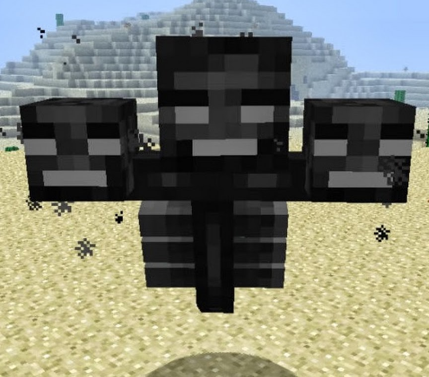
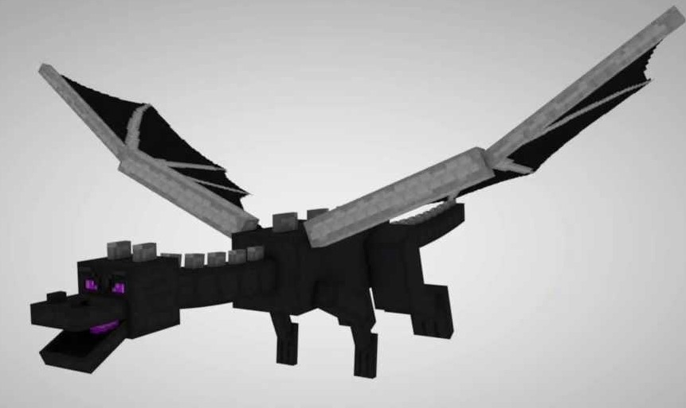
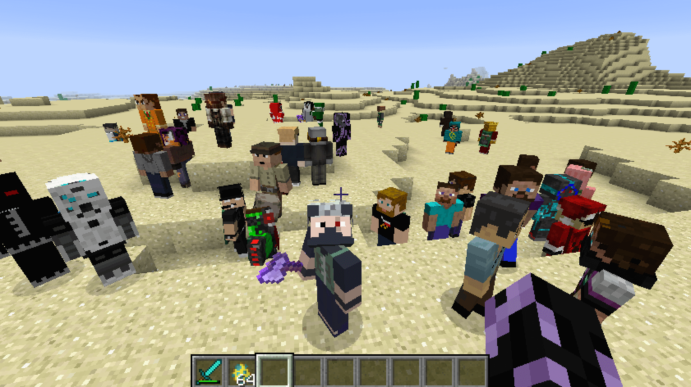
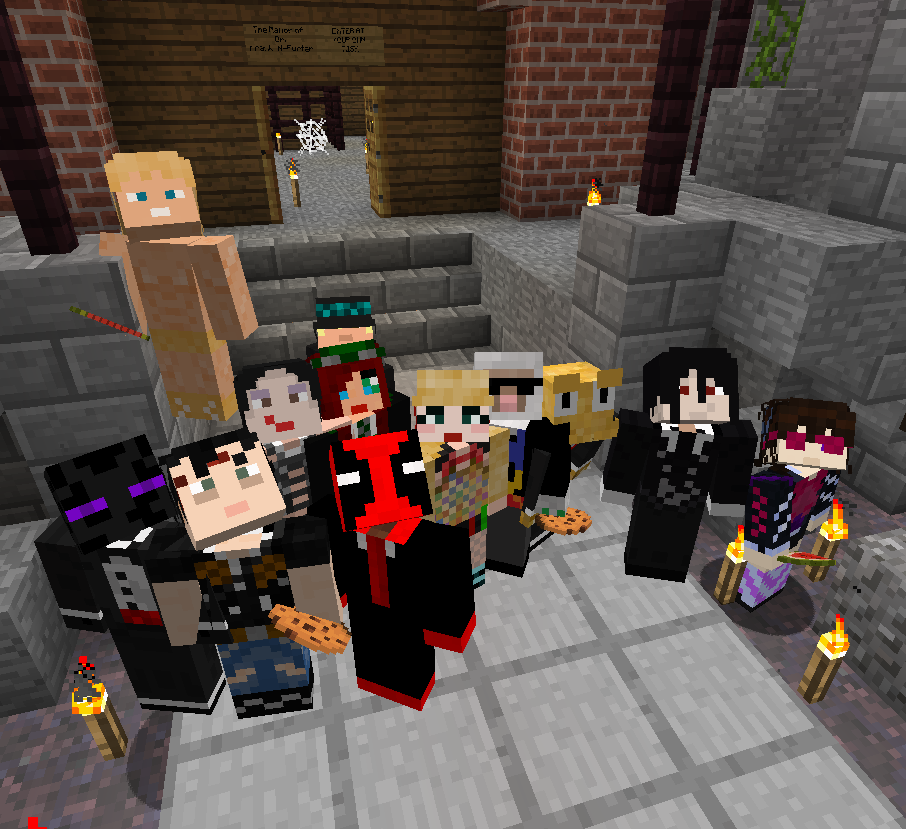

История создание
С самого создания Minecraft разрабатывалась практически исключительно Нотчем, пока Йенс «Jeb» Бергенстен не начал работать вместе с ним. Впоследствии Джеб стал ведущим разработчиком этой игры. В Minecraft присутствует музыка за авторством Даниэля «C418» Розенфельда и картины Кристоффера Зеттерстранда. Изначально игра была выпущена 10 мая 2009 в версии, сейчас называемой Minecraft Classic, а в фазу официального релиза Minecraft вошла 18 ноября 2011 года. После релиза Minecraft был портирован на мобильные устройства и консоли. 6 ноября 2014 года Minecraft и все активы Mojang были приобретены Microsoft
Сюжет игры
Главный герой — парень по имени Стив. Он непонятным образом попадает в мир Minecraft , где ему нужно выжить любой ценой. Для начала стив должен построить дом, добыть оружие и броню, a позже победить двух боссов Визера и Дракона, а вообщем игроку дается воля свободы.
 Многопользовательская игра
Многопользовательская игра была введена 8 июня 2009 года для Classic, а позже (4 августа 2010) как SMP (Survival Multiplayer, многопользовательская игра в режиме Выживание). Мультиплеер, так ещё называют многопользовательскую игру, стал популярным аспектом игры с момента своего введения. Серверы для сетевой игры в Minecraft стали создавать свои собственные правила и обычаи, и игрой на них руководят администраторы и модераторы. Термин «грифер» (то есть игрок, причиняющий вред игрокам) часто используется в Интернете, но в контексте серверов Minecraft получил своё определение: человек, разрушающий или оскверняющий постройки других игроков
 